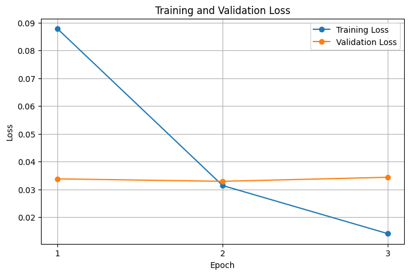

Abstract
Online job scams pose a growing threat to new-graduate job seekers,
motivating the need for automated tools that can identify fraudulent
postings in real time. We fine-tune LUKE, an entity-aware language
model, on a combined corpus derived from the Real-or-Fake Job Posting
dataset and the Employment Scam Aegean Dataset, using unified
representations of job titles, company profiles, descriptions,
requirements, and benefits. Our model achieves ~99% accuracy with low
evaluation loss, and we extend it with gradient-based evidence span
extraction that surfaces 2-5 concise phrases most responsible for each
prediction. Counterfactual fairness tests - modifying remote status,
salary terms, visa language, and similar attributes - show minimal
output shifts and near-zero flip rates, indicating that the classifier
is stable and not driven by sensitive or superficial wording.
To deliver these capabilities to end users, we built a Chrome extension
and FastAPI backend that integrate our model into any job platform. The
extension automatically scrapes each posting, uses an LLM to parse it
into structured fields, classifies fraud risk, and, using the evidence
span mechanism, highlights the specific terms that contributed most to a
fraudulent prediction. It then displays risk levels, confidence,
fairness metadata, and a concise explanation directly in the browser.
This system provides job seekers with a practical, transparent, and
equitable tool for detecting online job scams.
Introduction / Background / Motivation
What did you try to do? What problem did you try to solve? Articulate
your objectives using absolutely no jargon.
We aim to automatically detect fraudulent job postings to protect job
seekers from online scams. Fake job postings can lead to identity theft,
financial loss, and wasted time for vulnerable individuals seeking
employment. Our goal is to build a classifier that can distinguish
legitimate job postings from fraudulent ones based on textual content,
and to make this technology accessible through a practical browser
extension that job seekers can use in real-time.
How is it done today, and what are the limits of current practice?
Current approaches typically rely on manual review or simple rule-based
systems that check for specific keywords or patterns. However, these
methods are time-consuming, don't scale well, and can be easily
circumvented by sophisticated scammers. Recent deep learning approaches
show promise but often treat job postings as simple text without
considering the structured nature of the information (title, company
profile, requirements, etc.). Additionally, existing solutions lack
interpretability - they don't explain which specific parts of a posting
are suspicious, making it difficult for users to understand why a
posting was flagged.
Who cares? If you are successful, what difference will it make?
Job seekers, particularly those in vulnerable populations, would benefit
from automated fraud detection systems that can flag suspicious postings
in real time. Job platforms and recruitment websites could integrate
such systems to improve user trust and safety. Successfully detecting
fraudulent postings can prevent financial losses, protect personal
information, and save job seekers significant time and emotional
distress. By providing both detection and explanation through span-level
analysis - which highlights the specific phrases contributing to a
fraudulent prediction - users can better understand the model's
reasoning and make more informed decisions.
Approach
What did you do exactly? How did you solve the problem? Why did you
think it would be successful? Is anything new in your approach?
We fine-tuned LUKE (Language Understanding with Knowledge-based
Embeddings), a pre-trained transformer model with entity-aware
self-attention mechanisms. We combined five key textual fields from each
job posting (title, company profile, description, requirements, and
benefits) into a unified text representation and trained on a merged
dataset created from the Real-or-Fake Job Posting Prediction dataset and
the Employment Scam Aegean Dataset. Using an 80-10-10 stratified split,
our fine-tuned model achieved ~99% accuracy with very low evaluation
loss. Our approach expands beyond standard classification by
incorporating span-level interpretability, fairness analysis, and direct
real-world deployment.
-
Span-level fraud detection: We implemented
gradient-based evidence span extraction to identify the specific
phrases most responsible for a fraud prediction. These spans provide
transparent, interpretable explanations that help users understand why
a posting may be suspicious.
-
Counterfactual fairness analysis: We performed
counterfactual token-level fairness tests to ensure the model does not
rely on sensitive or superficial attributes such as remote status,
salary phrasing, or visa language. By generating counterfactual
variants and observing prediction stability, we verified that
probability shifts remained near zero with almost no label flips,
indicating strong fairness and robustness.
-
Chrome extension deployment: We built a Chrome
extension integrated with a FastAPI backend that automatically scrapes
job postings on any website, parses the raw text using an LLM, runs
our LUKE classifier, and displays fraud risk levels, evidence spans,
fairness metadata, and an explanation directly in the user's browser.
What problems did you anticipate? What problems did you encounter?
Did the very first thing you tried work?
We anticipated class imbalance issues given that fraudulent postings are
a small minority. To address this, we used stratified sampling and
tracked both accuracy and macro F1-score to avoid majority-class
dominance. Our initial baseline model (before fine-tuning) achieved ~5%
accuracy, confirming the need for training. We also set a maximum
sequence length of 256 tokens to handle long descriptions efficiently.
For interpretability, we experimented with attention weights but
ultimately used gradient-based attribution, which produced clearer and
more reliable evidence spans. For deployment, we evaluated multiple
strategies and settled on a FastAPI backend with LLM-based parsing to
balance model performance with fast response times in the browser
extension.
Results
How did you measure success? What experiments were used? What were
the results, both quantitative and qualitative? Did you succeed? Did
you fail? Why?
We evaluated our model using accuracy, macro F1-score, and validation
loss on the combined dataset (Real-or-Fake Job Posting + Employment Scam
Aegean). As a baseline, the pre-trained, unfine-tuned LUKE model
achieved roughly 4-5% accuracy, equivalent to predicting all postings as
legitimate. After fine-tuning for 3 epochs with a learning rate of 2e-5,
batch size of 32, and weight decay of 0.01, our final model reached:
- Evaluation Accuracy: ~99%
- Evaluation Loss: ~0.03
- F1 Macro: ~99%
This represents a dramatic improvement over the baseline and indicates
that the model successfully learned discriminative features for
identifying job posting fraud.
Qualitatively, the model's gradient-based evidence span analysis
highlights meaningful suspicious phrases (for example, requests for
“processing fees” or “confidential” communication methods). Combined
with a low false-positive rate and strong stability under counterfactual
fairness tests, the results demonstrate that our approach is both
accurate and reliable for real-world deployment.
| Epoch |
Training Loss |
Validation Loss |
Accuracy |
F1 Macro |
| 1 |
0.087800 |
0.033800 |
0.991035 |
0.990583 |
| 2 |
0.031400 |
0.032915 |
0.991932 |
0.991507 |
| 3 |
0.014100 |
0.034364 |
0.993725 |
0.993394 |
Table 1. Training progress showing loss, accuracy, and F1 macro scores
per epoch.

Conclusion and Future Work
Our project successfully delivers an end-to-end system for detecting
fraudulent job postings with high accuracy, interpretability, and
real-world usability. We implemented gradient-based span-level
attribution to highlight the specific phrases most responsible for fraud
predictions, providing users with transparent and actionable
explanations. We also conducted a full counterfactual fairness analysis,
demonstrating that the model remains stable under changes to neutral
attributes such as remote status, salary phrasing, and visa language,
with prediction shifts near zero and virtually no label flips.
To make our work directly accessible to job seekers, we developed a
Chrome extension integrated with a FastAPI backend that parses job
postings from any website, runs our LUKE-based classifier, and displays
a clear risk level, top suspicious spans, and a user-friendly
explanation. This deployment shows that our approach is not only
accurate in offline evaluation but also effective and responsive in
real-time usage.
Future work includes expanding the span attribution methodology to
reduce tokenizer artifacts, improving calibration of confidence scores,
and improving accuracy for newer, ever-changing job postings. We also
aim to explore lightweight model distillation or quantization techniques
to streamline on-device inference. These improvements will further
strengthen the system's interpretability, fairness, and accessibility
for global job seekers.